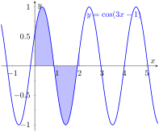
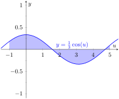
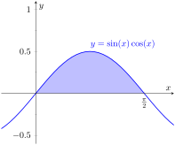
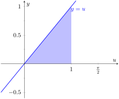

How would we have evaluated this indefinite integral without starting with \(f(x)\) as we did?
This section explores integration by substitution. It allows us to “undo the Chain Rule.” Substitution allows us to evaluate the above integral without knowing the original function first.
The underlying principle is to rewrite a “complicated” integral of the form \(\int f(x)\, dx\) as a not-so-complicated integral \(\int h(u)\, du\text{.}\) We'll formally establish later how this is done. First, consider again our introductory indefinite integral, \(\int (20x+30)(x^2+3x-5)^9\, dx\text{.}\) Arguably the most “complicated” part of the integrand is \((x^2+3x-5)^9\text{.}\) We wish to make this simpler; we do so through a substitution. Let \(u=x^2+3x-5\text{.}\) Thus
One might well look at this and think “I (sort of) followed how that worked, but I could never come up with that on my own,” but the process is learnable. This section contains numerous examples through which the reader will gain understanding and mathematical maturity enabling them to regard substitution as a natural tool when evaluating integrals.
We stated before that integration by substitution “undoes” the Chain Rule. Specifically, let \(F(x)\) and \(g(x)\) be differentiable functions and consider the derivative of their composition:
Integration by substitution works by recognizing the “inside” function \(g(x)\) and replacing it with a variable. By setting \(u=g(x)\text{,}\) we can rewrite the derivative as
The point of substitution is to make the integration step easy. Indeed, the step \(\int \Fp(u)\, du = F(u) + C\) looks easy, as the antiderivative of the derivative of \(F\) is just \(F\text{,}\) plus a constant. The “work” involved is making the proper substitution. There is not a step-by-step process that one can memorize; rather, experience will be one's guide. To gain experience, we now embark on many examples.
Knowing that substitution is related to the Chain Rule, we choose to let \(u\) be the “inside” function of \(\sin(x^2+5)\text{.}\) (This is not always a good choice, but it is often the best place to start.)
Let \(u = x^2+5\text{,}\) hence \(du = 2x\,dx\text{.}\) The integrand has an \(x\,dx\) term, but not a \(2x\,dx\) term. (Recall that multiplication is commutative, so the \(x\) does not physically have to be next to \(dx\) for there to be an \(x\,dx\) term.) We can divide both sides of the \(du\) expression by 2:
Again let \(u\) replace the “inside” function. Letting \(u = 5x\text{,}\) we have \(du = 5\, dx\text{.}\) Since our integrand does not have a \(5\, dx\) term, we can divide the previous equation by \(5\) to obtain \(\frac15du = dx\text{.}\) We can now substitute.
We can again check our work through differentiation.
The previous example exhibited a common, and simple, type of substitution. The “inside” function was a linear function (in this case, \(y = 5x\)). When the inside function is linear, the resulting integration is very predictable, outlined here.
Key Idea6.1.4.Substitution With A Linear Function.
Consider \(\int \Fp(ax+b)\, dx\text{,}\) where \(a\neq 0\) and \(b\) are constants. Letting \(u = ax+b\) gives \(du = a\cdot dx\text{,}\) leading to the result
Thus \(\int \sin(7x-4)\, dx = -\frac17\cos(7x-4)+C\text{.}\) Our next example can use Key Idea 6.1.4, but we will only employ it after going through all of the steps.
Example6.1.5.Integrating by substituting a linear function.
View the integrand as the composition of functions \(f(g(x))\text{,}\) where \(f(x) = 7/x\) and \(g(x) = -3x+1\text{.}\) Employing our understanding of substitution, we let \(u = -3x+1\text{,}\) the inside function. Thus \(du = -3\, dx\text{.}\) The integrand lacks a \(-3\text{;}\) hence divide the previous equation by \(-3\) to obtain \(-du/3 = dx\text{.}\) We can now evaluate the integral through substitution.
Using Key Idea 6.1.4 is faster, recognizing that \(u\) is linear and \(a = -3\text{.}\) One may want to continue writing out all the steps until they are comfortable with this particular shortcut.
Not all integrals that benefit from substitution have a clear “inside” function. Several of the following examples will demonstrate ways in which this occurs.
There is not a composition of functions here to exploit; rather, just a product of functions. Do not be afraid to experiment; when given an integral to evaluate, it is often beneficial to think “If I let \(u\) be this, then \(du\) must be that …” and see if this helps simplify the integral at all.
In this example, let's set \(u = \sin(x)\text{.}\) Then \(du = \cos(x) \, dx\text{,}\) which we have as part of the integrand! The substitution becomes very straightforward:
One would do well to ask “What would happen if we let \(u = \cos(x)\text{?}\)” The result is just as easy to find, yet looks very different. The challenge to the reader is to evaluate the integral letting \(u = \cos(x)\) and discover why the answer is the same, yet looks different.
Our examples so far have required “basic substitution.” The next example demonstrates how substitutions can be made that often strike the new learner as being “nonstandard.”
Recognizing the composition of functions, set \(u = x+3\text{.}\) Then \(du = dx\text{,}\) giving what seems initially to be a simple substitution. But at this stage, we have:
We cannot evaluate an integral that has both an \(x\) and an \(u\) in it. We need to convert the \(x\) to an expression involving just \(u\text{.}\)
Since we set \(u = x+3\text{,}\) we can also state that \(u-3 = x\text{.}\) Thus we can replace \(x\) in the integrand with \(u-3\text{.}\) It will also be helpful to rewrite \(\sqrt{u}\) as \(u^\frac12\text{.}\)
Checking your work is always a good idea. In this particular case, some algebra will be needed to make one's answer match the integrand in the original problem.
This is another example where there does not seem to be an obvious composition of functions. The line of thinking used in Example 6.1.7 is useful here: choose something for \(u\) and consider what this implies \(du\) must be. If \(u\) can be chosen such that \(du\) also appears in the integrand, then we have chosen well.
Choosing \(u = 1/x\) makes \(du = -1/x^2\, dx\text{;}\) that does not seem helpful. However, setting \(u = \ln(x)\) makes \(du = 1/x\, dx\text{,}\) which is part of the integrand. Thus:
Section 6.3 delves deeper into integrals of a variety of trigonometric functions; here we use substitution to establish a foundation that we will build upon.
The next three examples will help fill in some missing pieces of our antiderivative knowledge. We know the antiderivatives of the sine and cosine functions; what about the other standard functions tangent, cotangent, secant and cosecant? We discover these next.
Example6.1.9.Integrating by substitution: the antiderivative of \(\tan(x)\).
The previous paragraph established that we did not know the antiderivatives of tangent, hence we must assume that we have learned something in this section that can help us evaluate this indefinite integral.
Rewrite \(\tan(x)\) as \(\sin(x) /\cos(x)\text{.}\) While the presence of a composition of functions may not be immediately obvious, recognize that \(\cos(x)\) is “inside” the \(1/x\) function. Therefore, we see if setting \(u = \cos(x)\) returns usable results. We have that \(du = -\sin(x) \, dx\text{,}\) hence \(-du = \sin(x) \, dx\text{.}\) We can integrate:
We can use similar techniques to those used in Examples 6.1.9 and Example 6.1.10 to find antiderivatives of \(\cot(x)\) and \(\csc(x)\) (which the reader can explore in the exercises.) We summarize our results here.
Theorem6.1.11.Antiderivatives of Trigonometric Functions.
We have a composition of functions as \(\cos^2(x) = \big(\cos(x) \big)^2\text{.}\) However, setting \(u = \cos(x)\) means \(du = -\sin(x) \, dx\text{,}\) which we do not have in the integral. Another technique is needed.
The process we'll employ is to use a Power Reducing formula for \(\cos^2(x)\text{,}\) which states
where we used Key Idea 6.1.4 for the antiderivative of \(\cos(2x)\text{.}\)
We'll make significant use of this power-reducing technique in future sections.
Subsection6.1.2Simplifying the Integrand
It is common to be reluctant to manipulate the integrand of an integral; at first, our grasp of integration is tenuous and one may think that working with the integrand will improperly change the results. Integration by substitution works using a different logic: as long as equality is maintained, the integrand can be manipulated so that its form is easier to deal with. The next two examples demonstrate common ways in which using algebra first makes the integration easier to perform.
Example6.1.13.Integration by substitution: simplifying first.
One may try to start by setting \(u\) equal to either the numerator or denominator; in each instance, the result is not workable.
When dealing with rational functions (i.e., quotients made up of polynomial functions), it is an almost universal rule that everything works better when the degree of the numerator is less than the degree of the denominator. Hence we use polynomial division.
We skip the specifics of the steps, but note that when \(x^2+2x+1\) is divided into \(x^3+4x^2+8x+5\text{,}\) it goes in \(x+2\) times with a remainder of \(3x+3\text{.}\) Thus
Integrating \(x+2\) is simple. The fraction can be integrated by setting \(u = x^2+2x+1\text{,}\) giving \(du = (2x+2)\, dx\text{.}\) This is very similar to the numerator. Note that \(du/2 = (x+1)\, dx\) and then consider the following:
In some ways, we “lucked out” in that after dividing, substitution was able to be done. In later sections we'll develop techniques for handling rational functions where substitution is not directly feasible.
Example6.1.14.Integration by alternate methods.
Evaluate \(\ds\int \frac{x^2+2x+3}{\sqrt{x}}\, dx\) with, and without, substitution.
This gives us \(\ds \int \frac{x^2+2x+3}{\sqrt{x}}\, dx = \int (x^2+2x+3)\cdot2\, du\text{.}\) What are we to do with the other \(x\) terms? Since \(u = x^\frac12\text{,}\)\(u^2 = x\text{,}\) etc. We can then replace \(x^2\) and \(x\) with appropriate powers of \(u\text{.}\) We thus have
which is obviously the same answer we obtained before. In this situation, substitution is arguably more work than our other method. The fantastic thing is that it works. It demonstrates how flexible integration is.
Subsection6.1.3Substitution and Inverse Trigonometric Functions
When studying derivatives of inverse functions, we learned that
We now explore how Substitution can be used to “undo” certain derivatives that are the result of the Chain Rule applied to Inverse Trigonometric functions. We begin with an example.
Example6.1.15.Integrating by substitution: inverse trigonometric functions.
Example 6.1.15 demonstrates a general technique that can be applied to other integrands that result in inverse trigonometric functions. The results are summarized here.
Most applications of Theorem 6.1.16 are not as straightforward. The next examples show some common integrals that can still be approached with this theorem.
Example6.1.18.Integrating by substitution: completing the square.
Initially, this integral seems to have nothing in common with the integrals in Theorem 6.1.16. As it lacks a square root, it almost certainly is not related to arcsine or arcsecant. It is, however, related to the arctangent function.
We see this by completing the square in the denominator. We give a brief reminder of the process here.
Start with a quadratic with a leading coefficient of 1. It will have the form of \(x^2 + bx + c\text{.}\) Take 1/2 of \(b\text{,}\) square it, and add/subtract it back into the expression. i.e.,
We can now integrate this using the arctangent rule. Technically, we need to substitute first with \(u=x-2\text{,}\) but we can employ Key Idea 6.1.4 instead. Thus we have
The second integral is handled by substitution, with \(u = 16-x^2\text{.}\)\(\ds \int\frac{x}{\sqrt{16-x^2}}\, dx\text{:}\) Set \(u = 16-x^2\text{,}\) so \(du = -2x\, dx\) and \(x\, dx = -du/2\text{.}\) We have
As with all definite integrals, you can check your work by differentiation.
Subsection6.1.4Substitution and Definite Integration
This section has focused on evaluating indefinite integrals as we are learning a new technique for finding antiderivatives. However, much of the time integration is used in the context of a definite integral. Definite integrals that require substitution can be calculated using the following workflow:
Start with a definite integral \(\ds \int_a^b f(x)\, dx\) that requires substitution.
Ignore the bounds; use substitution to evaluate \(\ds \int f(x)\, dx\) and find an antiderivative \(F(x)\text{.}\)
Evaluate \(F(x)\) at the bounds; that is, evaluate \(F(x)\Big|_a^b = F(b) - F(a)\text{.}\)
This workflow works fine, but substitution offers an alternative that is powerful and amazing (and a little time saving).
At its heart, (using the notation of Theorem 6.1.1) substitution converts integrals of the form \(\int \Fp(g(x))g'(x)\, dx\) into an integral of the form \(\int \Fp(u)\, du\) with the substitution of \(u = g(x)\text{.}\) The following theorem states how the bounds of a definite integral can be changed as the substitution is performed.
Theorem6.1.20.Substitution with Definite Integrals.
Let \(F\) and \(g\) be differentiable functions, where the range of \(g\) is an interval \(I\) that is contained in the domain of \(F\) and \(u=g(x)\text{.}\) Then
In effect, Theorem 6.1.20 states that once you convert to integrating with respect to \(u\text{,}\) you do not need to switch back to evaluating with respect to \(x\text{.}\) A few examples will help one understand.
Example6.1.21.Definite integrals and substitution: changing the bounds.
Evaluate \(\ds\int_0^2 \cos(3x-1)\, dx\) using Theorem 6.1.20.
Observing the composition of functions, let \(u=3x-1\text{,}\) hence \(du = 3\, dx\text{.}\) As \(3\, dx\) does not appear in the integrand, divide the latter equation by 3 to get \(du/3 = dx\text{.}\)
By setting \(u = 3x-1\text{,}\) we are implicitly stating that \(g(x) = 3x-1\text{.}\)Theorem 6.1.20 states that the new lower bound is \(g(0) = -1\text{;}\) the new upper bound is \(g(2) = 5\text{.}\) We now evaluate the definite integral:
Notice how once we converted the integral to be in terms of \(u\text{,}\) we never went back to using \(x\text{.}\)
(a)
(b)
Figure6.1.22.Graphing the areas defined by the definite integrals of Example 6.1.21
The graphs in Figure 6.1.22 tell more of the story. In Figure 6.1.22.(a) the area defined by the original integrand is shaded, whereas in Figure 6.1.22.(b) the area defined by the new integrand is shaded. In this particular situation, the areas look very similar; the new region is “shorter” but “wider,” giving the same area.
Example6.1.23.Definite integrals and substitution: changing the bounds.
Evaluate \(\ds \int_0^{\pi/2} \sin(x) \cos(x) \, dx\) using Theorem 6.1.20.
We saw the corresponding indefinite integral in Example 6.1.6. In that example we set \(u = \sin(x)\) but stated that we could have let \(u = \cos(x)\text{.}\) For variety, we do the latter here.
Let \(u = g(x) = \cos(x)\text{,}\) giving \(du = -\sin(x) \, dx\) and hence \(\sin(x) \, dx = -du\text{.}\) The new upper bound is \(g(\pi/2) = 0\text{;}\) the new lower bound is \(g(0) = 1\text{.}\) Note how the lower bound is actually larger than the upper bound now. We have
In Figure 6.1.24 we have again graphed the two regions defined by our definite integrals. Unlike the previous example, they bear no resemblance to each other. However, Theorem 6.1.20 guarantees that they have the same area.
(a)
(b)
Figure6.1.24.Graphing the areas defined by the definite integrals of Example 6.1.23
Integration by substitution is a powerful and useful integration technique. The next section introduces another technique, called Integration by Parts. As substitution “undoes” the Chain Rule, integration by parts “undoes” the Product Rule. Together, these two techniques provide a strong foundation on which most other integration techniques are based.
Exercises6.1.5Exercises
Terms and Concepts
1.
Substitution “undoes” what derivative rule?
2.
True
False
One can use algebra to rewrite the integrand of an integral to make it easier to evaluate.
Problems
Exercise Group.
Evaluate the indefinite integral to develop an understanding of Substitution.